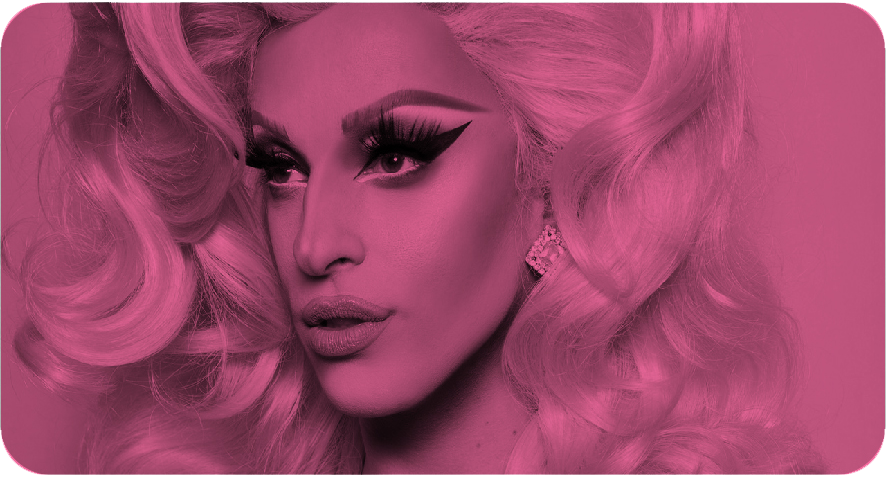

Cabello
El cabello es parte principal del vestuario, ayuda a conformar el personaje y a expresar más la intension que el artista tiene. Para que el cabello se vea natural, las pelucas y su preparacion para ponerselo debe ser minuciosa y de mucho cuidado.